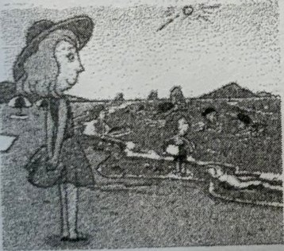
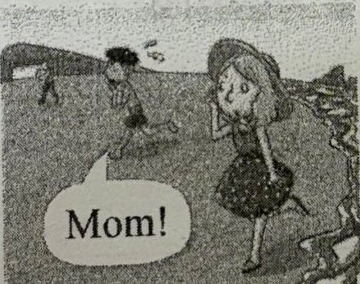
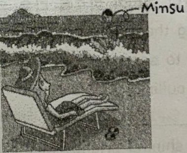
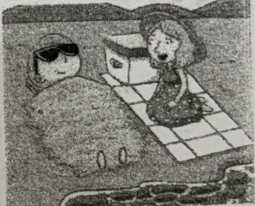

5-⑤ | 5과. The City as a Canvas | 이름 |
|
Street Art in London | 날짜 |
|
1 | Street Art in London |
| |
2 | Modern street art comes in many different forms, and it makes cities colorful and lively. |
it = Modern street art / come in + 형태: ~한 형태로 나오다(존재하다) / make + 목적어 + 형용사: ~을 ...하게 만들다 (5형식) | |
3 | Today, we are going to see some well-known street artworks in London. |
be going to-V : ~할 예정이다 / well-known: 잘 알려진, 유명한 | |
4 | The place that we are going to visit is Shoreditch. |
목적격 관계대명사 that (선행사: the place) → 생략 가능 / 문장의 동사는 is | |
5 | Poor workers used to live in this area, but now it is one of the hippest areas in London. |
used to-V : ~하곤 했다, ~했었다 (cf. be used to-V: ~하는 데 사용되다 / be used to -ing: ~에 익숙하다) / one of + 복수명사: ~들 중 하나 / this area = Shoreditch / hippest: hip(유행에 밝은)의 최상급 | |
6 | We can find so many great pieces of street art here. |
pieces of + 셀 수 없는 명사(art): ~ 작품들 / here = in Shoreditch | |
7 | Do you see the painting over there? |
over there: 저쪽에 | |
8 | It is by the artist STIK. |
by + (사람) : (작품 등이) ~에 의해 만들어진 / It = the painting over there | |
9 | He is famous for using only lines and dots in his paintings of human bodies. |
be famous for -ing : ~하는 것으로 유명하다 (for는 전치사이므로 뒤에 동명사가 온다) | |
10 | According to STIK, the three figures represent the past, present, and future of Shoreditch. |
according to ~ : ~에 따르면 / figure: 인물, 형상 / represent: 나타내다, 상징하다 | |
11 | Which figure represents which? |
which(의문형용사) figure ~ which(의문대명사): 어느 것을 | |
12 | Well, look closely at the eyes of the three figures. |
명령문 (동사원형으로 시작) : ~해라 / look closely at ~: ~을 자세히 보다 | |
13 | They are just dots, but they will give you a clue. |
they = the eyes of the three figures / give + 간접목적어(you) + 직접목적어(a clue) → 4형식 | |
14 | We are now in Finsbury Park to see a painting by Banksy, an internationally famous street artist. |
to see: to부정사의 부사적 용법 – 목적 (~하기 위해) / Banksy = an internationally famous street artist (동격, 콤마로 연결) | |
15 | Banksy's artworks often carry social messages, and the green tree you see over there is a good example. |
the green tree (that) you see over there: 목적격 관계대명사 that 생략 / 주어 the green tree ~ 동사 is | |
16 | As you can see, he created a green tree by spraying green paint on a wall behind a leafless tree. |
by + 동명사 : ~함으로써 / as you can see: 보시다시피 / leafless: 잎이 없는 | |
17 | Next to the tree, there is a person who is holding a sprayer. |
주격 관계대명사 who (선행사: a person) / there is + 단수명사 | |
18 | What message does Banksy want to give us through this painting? |
want to-V: ~하기를 원하다 / give + 간접목적어(us) + 직접목적어(what message) / through: ~을 통해 |
19 | In many people's opinion, he is telling us that nature is having a hard time. |
tell + 간접목적어(us) + 직접목적어(that절) → 4형식 / in one's opinion: ~의 의견으로는 / have a hard time: 힘든 시간을 보내다 | |
20 | They think he wants us to take better care of it. |
they = many people / think (that) he wants ~: 접속사 that 생략 / want + 목적어(us) + to-V(to take) : ~가 ~하기를 원하다 / it = nature / take care of: ~을 돌보다 | |
21 | The final stop of our tour today is Muswell Hill. |
stop: (투어의) 정차 장소, 방문지 | |
22 | Can't see any street artworks? |
= (You) can't see any street artworks? – 주어가 생략된 구어체 의문문 | |
23 | Well, look down and look closely. |
명령문 + and + 명령문 | |
24 | Do you see the little chewing gum paintings? |
chewing gum: 씹는 껌 (chewing은 gum을 꾸미는 동명사) | |
25 | They are by the artist Ben Wilson. |
they = the little chewing gum paintings / by + 사람: ~에 의해 만들어진 | |
26 | Wilson is well known for painting pictures on gum that people drop on the street. |
목적격 관계대명사 that (선행사: gum) / be well known for -ing: ~하는 것으로 잘 알려져 있다 | |
27 | His gum paintings often carry personal messages from people he meets on the street. |
people (that/whom) he meets: 목적격 관계대명사 생략 (선행사: people) | |
28 | For example, the one over here is a happy birthday wish for a loved one. |
the one = the gum painting / a loved one: 사랑하는 사람 | |
29 | Wilson's gum paintings are tiny, but they give great pleasure to many people. |
they = Wilson's gum paintings / give A to B: A를 B에게 주다 (3형식) |
5-⑥ | 5과. The City as a Canvas | 이름 |
|
Street Art in London | 날짜 |
|
1 | 런던의 거리 예술 |
Street Art in London | |
2 | 현대 거리 예술은 다양한 형태로 존재하며, 도시를 다채롭고 활기차게 만듭니다. |
Modern street art comes in many different forms, and it makes cities colorful and lively. | |
3 | 오늘, 우리는 런던의 잘 알려진 거리 예술 작품들을 살펴보겠습니다. |
Today, we are going to see some well-known street artworks in London. | |
4 | 우리가 방문할 곳은 Shoreditch입니다. |
The place that we are going to visit is Shoreditch. | |
5 | 가난한 노동자들이 이곳에서 살았었지만, 지금은 런던에서 가장 힙한 지역 중 하나입니다. |
Poor workers used to live in this area, but now it is one of the hippest areas in London. | |
6 | 우리는 이곳에서 정말 많은 멋진 거리 예술 작품들을 볼 수 있습니다. |
We can find so many great pieces of street art here. | |
7 | 저쪽에 있는 저 그림이 보이시나요? |
Do you see the painting over there? | |
8 | 그것은 STIK이라는 예술가의 작품입니다. |
It is by the artist STIK. | |
9 | 그는 사람의 몸을 그린 그림에서 선과 점만 사용하는 것으로 유명합니다. |
He is famous for using only lines and dots in his paintings of human bodies. | |
10 | STIK에 따르면, 저 세 인물은 Shoreditch의 과거, 현재, 그리고 미래를 나타낸다고 합니다. |
According to STIK, the three figures represent the past, present, and future of Shoreditch. | |
11 | 어느 인물이 어떤 것을 나타낼까요? |
Which figure represents which? | |
12 | 자, 세 인물의 눈을 자세히 살펴보세요. |
Well, look closely at the eyes of the three figures. | |
13 | 그것들은 그저 점일 뿐이지만, 그 점들이 여러분에게 힌트를 줄 것입니다. |
They are just dots, but they will give you a clue. | |
14 | 우리는 이제 세계적으로 유명한 거리 예술가 Banksy의 작품을 보러 Finsbury Park에 와 있습니다. |
We are now in Finsbury Park to see a painting by Banksy, an internationally famous street artist. | |
15 | Banksy의 예술 작품은 종종 사회적 메시지를 담고 있으며, 저기 보이는 녹색 나무가 좋은 예입니다. |
Banksy's artworks often carry social messages, and the green tree you see over there is a good example. | |
16 | 보시다시피, 그는 잎이 없는 나무 뒤 벽에 녹색 페인트를 뿌려 녹색 나무를 만들어 냈습니다. |
As you can see, he created a green tree by spraying green paint on a wall behind a leafless tree. | |
17 | 그 나무 옆에는 스프레이를 들고 있는 한 사람이 있습니다. |
Next to the tree, there is a person who is holding a sprayer. | |
18 | Banksy는 이 그림을 통해 우리에게 어떤 메시지를 전하고 싶은 걸까요? |
What message does Banksy want to give us through this painting? |
19 | 많은 사람들의 의견에 따르면, 그는 자연이 어려움을 겪고 있다는 것을 말하려는 것 같습니다. |
In many people's opinion, he is telling us that nature is having a hard time. | |
20 | 그들은 Banksy가 우리로 하여금 자연을 더 잘 보살피기를 원하는 것 같다고 생각합니다. |
They think he wants us to take better care of it. | |
21 | 오늘 우리 투어의 마지막 방문지는 Muswell Hill입니다. |
The final stop of our tour today is Muswell Hill. | |
22 | 어떤 거리 예술 작품도 보이지 않나요? |
Can't see any street artworks? | |
23 | 그렇다면, 아래를 내려다보고 자세히 살펴보세요. |
Well, look down and look closely. | |
24 | 여러분은 작은 껌 그림들이 보이나요? |
Do you see the little chewing gum paintings? | |
25 | 이것들은 예술가 Ben Wilson의 작품입니다. |
They are by the artist Ben Wilson. | |
26 | Wilson은 사람들이 길에 버린 껌 위에 그림을 그리는 것으로 잘 알려져 있습니다. |
Wilson is well known for painting pictures on gum that people drop on the street. | |
27 | 그의 껌 그림은 종종 그가 길에서 만난 사람들의 개인적인 메시지를 담고 있습니다. |
His gum paintings often carry personal messages from people he meets on the street. | |
28 | 예를 들어, 여기 있는 그림은 사랑하는 사람을 위한 생일 축하 메시지입니다. |
For example, the one over here is a happy birthday wish for a loved one. | |
29 | Wilson의 껌 그림은 정말 작지만, 많은 사람들에게 큰 기쁨을 줍니다. |
Wilson's gum paintings are tiny, but they give great pleasure to many people. |
Lesson 5-① The City as a Canvas | Words | Class |
| Name |
|
★ 영영풀이를 읽고 빈칸을 채우세요.
No | English | Korean | English Meaning |
1 | artwork | n. 미술품 | n. something made by an artist, like a drawing, painting, or sculpture |
2 | chew | v. (음식을) 씹다 | v. to break food into smaller, softer pieces with the teeth |
3 | cinema | n. 영화관 | n. a place where movies are shown |
4 | clue | n. 단서 | n. a sign or some information that helps you to find the answer to a problem or question |
5 | dot | n. 점 | n. a very small round mark |
6 | fair | n. 박람회 | n. a large public event at which there are various kinds of competitions, games, rides and entertainment |
7 | figure | n. 인물 (모습) | n. a person or an animal in a drawing, painting, etc. |
8 | hall | n. (공공의) 건물 | n. a building or large room for public meetings, meals, concerts, etc. |
9 | hip | a. 세련된, 최신 유행에 밝은 | a. following the latest fashions in music and clothes |
10 | leafless | a. 잎이 없는 | a. having no leaves |
11 | lively | a. 활기 넘치는, 생기 있는 | a. full of life and energy |
12 | modern | a. 현대의, 현대적인 | a. of the present or recent times |
13 | opinion | n. 의견 | n. a thought or belief about something or someone |
14 | past | n. 과거 | n. the period of time before now |
15 | pleasure | n. 기쁨, 즐거움 | n. a state of feeling or being happy |
16 | represent | v. 나타내다, 표현하다 | v. to show something or someone, especially in a picture |
17 | spray | v. 뿌리다, 분사하다 | v. to spread a liquid in small drops over an area |
18 | sprayer | n. 분무기 | n. a tool that spreads liquid in small drops |
19 | stadium | n. 경기장 | n. a playing area that is surrounded by seats, for sports, concerts, and other events |
20 | station | n. 역, 정류장 | n. a building where buses or trains stop so that people can get on or off |
★ Word Search Puzzle
T | S | K | T | F | I | G | U | R | E | O | T | E | E | 1. 밑의 빈칸을 채우기
2. 빈칸에 해당하는 단어를
3. 왼쪽에서 오른쪽, 오른쪽에서 |
I | R | E | I | R | E | S | A | D | R | O | T | N | U | |
R | L | R | E | S | E | A | M | E | D | I | N | N | I | |
N | U | O | T | R | R | F | R | R | E | M | E | O | O | |
I | N | P | E | T | F | A | N | U | P | U | S | T | H | |
T | W | A | W | U | A | E | R | S | P | R | E | I | I | |
E | G | O | E | N | A | C | E | A | P | S | R | S | U | |
N | R | R | O | E | P | O | D | E | S | G | P | I | G | |
K | N | T | T | W | H | R | O | L | F | P | E | T | A | |
M | O | E | U | T | I | D | M | P | T | N | R | R | D | |
M | E | P | U | E | S | T | A | D | I | U | M | A | I | |
N | W | E | H | C | P | T | S | O | O | I | P | D | Y | |
T | N | K | P | N | O | N | O | I | N | I | P | O | R | |
M | I | H | R | R | T | O | S | T | A | T | I | O | N |
1 | We learned about famous artwork s in art class. (우리는 미술 수업에서 유명한 미술 작품들에 대해 배웠다.) | 6 | We watched the game from the top of the stadium . (우리는 경기장의 가장 높은 곳에서 경기를 봤다.) |
2 | The figure in the drawing is holding a flower. (그림 속의 인물은 꽃 한 송이를 들고 있다.) | 7 | chew : v. to break food into smaller, softer pieces with the teeth |
3 | He gets a lot of pleasure from helping others. (그는 다른 사람을 돕는 것에서 많은 기쁨을 얻는다.) | 8 | modern : a. of the present or recent times |
4 | What does this mark represent ? | 9 | They waited for the train at the station . |
5 | She spray ed paint on the wall. | 10 | Everyone has a different opinion on the topic. |
★ 오늘 배운 영어 단어 중 2개 이상 넣은 문장 한 개 적어보기
__________________________________________________________________________________________
ㄷ | Lesson 6-① | Words & Phrases | 2학년 __반 __번 |
The Greatest Love for All | 이름 : |
★ 영영풀이를 읽고 빈칸을 채우세요.
No | English | Korean | English Meaning |
1 | article | n. 기사 | n. a piece of writing on a particular subject in a newspaper or magazine |
2 | bury | v. 묻다, 매장하다 | v. to put something into a hole in the ground and cover it |
3 | cemetery | n. 묘지 | n. a place where people put dead bodies in the ground |
4 | continue | v. 계속하다 | v. to keep doing something without stopping |
5 | curry | n. 카레 | n. a South Asian dish of meat, vegetables, etc., cooked in a hot spicy sauce |
6 | foreign | a. 외국의 | a. in or from a country that is not your own |
7 | foreigner | n. 외국인 | n. a person who comes from another country |
8 | gather | v. 모이다 | v. to come together in a group in one place |
9 | government | n. 정부 | n. the group of people who officially control a country |
10 | hide | v. 숨다 | v. to go somewhere where you hope you will not be seen or found |
11 | historic | a. 역사적으로 중요한 | a. important in history |
12 | independence | n. 독립 | n. freedom from political control by other countries |
13 | independent | a. 독립적인 | a. not governed or ruled by another country |
14 | invitation | n. 초청 | n. a written or spoken request for asking someone to come to an event |
15 | medicine | n. 의학 | n. the study and treatment of diseases and injuries |
16 | movement | n. 운동 | n. an action that a group of people take to change something in society |
17 | novel | n. (장편)소설 | n. a long story about imaginary characters and events |
18 | recommend | v. 추천하다 | v. to suggest that someone or something would be good |
19 | research | v. 조사하다 | v. to collect information about or for something |
20 | selfless | a. 이타적인 | a. caring more about other people's needs and interests than about your own |
★ 다음 단어가 들어간 문장을 교과서 본문(p.106~109)에서 직접 찾아 쓰시오.
| 단어 | 페이지 | 단어가 들어간 본문의 문장 |
1 | medicine | 107 | Dr. Schofield was a Canadian doctor, and he first came to Korea in 1916 to teach medicine. |
2 | independent | 107 | He believed that every country has the right to be independent, so he helped the Korean independence movement. |
3 | article |
|
|
4 | government |
|
|
★ puzzle을 완성하시오.
|
|
|
|
| 1a |
|
|
|
|
|
|
|
|
|
|
|
|
| 2b | u | r | y |
|
|
|
|
|
|
|
|
|
|
|
|
|
| t |
| 3v |
|
|
|
|
|
| 4s |
|
|
|
|
|
| i |
| o |
|
|
|
|
|
| e |
|
|
|
|
|
| c |
| l |
|
|
| 5g |
|
| l |
|
|
|
|
|
| l |
| u |
| 6r |
| a |
|
| f |
|
|
| 7g | o | v | e | r | n | m | e | n | t |
|
| l |
|
| 8f |
|
|
|
|
| t |
| c |
| 9h | i | d | e |
|
10c | o | n | t | 11i | n | u | e |
| o |
| e |
|
| s |
|
| r |
|
| n |
|
| e |
| m |
| r |
|
| s |
|
| e |
|
| d |
|
| r |
| m |
|
|
|
|
|
|
| i |
|
| e |
|
|
| 12m | e | d | i | c | i | n | e |
| g |
|
| p |
|
|
|
| n |
|
|
|
|
|
|
| n |
|
| e |
|
|
|
| d |
|
|
|
|
|
|
|
|
|
| n |
|
|
|
|
|
|
|
|
|
|
|
|
|
|
| d |
|
|
|
|
|
|
|
|
|
|
|
|
|
|
| e |
|
|
|
|
|
|
|
|
|
|
|
|
|
|
| n |
|
|
|
|
|
|
|
|
|
|
|
|
|
|
| t |
|
|
|
|
|
|
|
|
|
|
|
↔ 가로 2. v. 묻다, to put something into a hole in the ground and cover it → bury 7. n. The g______ decided to build a new hospital. 9. v. 숨다, to go somewhere where you hope you will not be seen or found → hide 10. v. They c____d to play soccer in the rain. 12. n. She decided to study m_____ to become a doctor. | ↕ 세로 1. n. I read an interesting a_____ about space travel. 3. v. He plans to v____ at the hospital next summer. (그는 내년 여름에 병원에서 자원봉사를 할 계획이다.) → volunteer 4. a. 이타적인, caring more about other people's needs and interests than about your own → selfless 5. v. We will g____ at the park for running. (우리는 달리기를 하러 공원에 모일 것이다.) → gather 6. v. Which dish do you r_____ for lunch? 8. a. 외국의, in or from a country that is not your own → foreign 11. a. 독립적인, not governed or ruled by another country → independent |
ㄷ | Lesson 7-① | Words & Phrases | 2학년 __반 __번 |
이름 : |
★ 영영풀이를 읽고 빈칸을 채우세요.
No | English | Korean | English Meaning |
1 | altar | n. 제단 | n. a type of table used in ceremonies |
2 | burn | v. (불)태우다 | v. to destroy, damage, injure or kill somebody or something by fire |
3 | celebrate (to celebrate) | v. 축하하다, 기념하다 | v. to show that a day or an event is important by doing something special |
4 | (traditional) costume | n. 의상, 복장 | n. the clothes worn by actors in a play or film, or worn by somebody to make them look like somebody or something else |
5 | decorate | v. 장식하다 | v. to make something look more attractive by putting things on it attractive 매력적인 · attract 끌다 · attraction 매력, 명소 |
6 | fireworks | n. 불꽃놀이 | n. the pattern of colorful explosions in the air planned as a show explosion 폭발 ← explode 폭발하다 |
7 | giant | a. 거대한 | a. very large |
8 | matter | v. 중요하다 | v. to be important (n.) 문제 |
9 | parade | n. 퍼레이드, 행진 | n. a line of people or vehicles moving together through a public place in order to celebrate an important day or event |
10 | participate | v. 참여하다, 참가하다 | v. to take part in or become involved in an activity involve 포함시키다, 관여시키다 |
11 | pole | n. 기둥, 막대기 | n. a long, thin stick of wood or metal that is often used to support something stick 막대기 |
12 | possible | a. 가능한 | a. able to be done or achieved |
13 | puzzle | n. 퍼즐 | n. a game or problem that you have to think about carefully to solve |
14 | recipe | n. 요리법 | n. directions for cooking food directions 지시 사항 |
15 | reindeer | n. 순록 | n. a type of deer that lives in the northern parts of Europe, Asia, and North America |
16 | skeleton | n. 해골 | n. the structure of bones that support the body of a person or an animal structure 구조 |
17 | statue | n. 조각상 | n. a large art object of a person or an animal that is made from a hard material like stone or metal |
18 | symbolize | v. 상징하다 | v. to represent something represent 나타내다, 대표하다 |
19 | take place | 개최되다, 열리다 | to happen |
A. <보기>에서 가장 알맞은 단어를 골라 문장을 완성해 봅시다.
보기 | recipe giant celebrate matter possible alter |
1. There are several possible answers to the question.
2. We held a party to celebrate the New Year.
3. For them, time doesn't matter so much.
4. We watched a movie about a giant robot.
B. 빈칸에 알맞은 단어를 주어진 철자로 시작하여 써 봅시다.
1. I love ice cream, e specially chocolate flavor.
2. It's so cloudy that we can h ardly see the sun.
3. Why does the heart shape s ymbolize love?
4. Will you help me d ecorate the Christmas tree?
5. Peter is interested in gukak, t raditional Korean music.
6. It doesn't m atter that we speak different languages.
We understand each other very well.
C. 알파벳 단어를 알맞게 배열하여 쓰고, 숫자가 표시된 철자를 모아 아래 문장을 완성해 봅시다.
| ||||||||||||||||||||||||||||||||||||||||||||||||||||||||||||||||||||||||||||||||||||||||||||||||||||||||||||||||||||||||||||||||||||||||||||||||||||||||||||||||||||||||||||||||||||||||||||||||||||||||||||||||||||||||||||||||||||||||||||||||||||||||||||||||||||||||||||||||||||||||||||||||||||||||||||||||||||||||||||||||||||||||||||||||||||||||||||||||||||||||||||||||||||||||||||
Lesson 5-② The City as a Canvas | Student Number |
|
Watch & Talk | Name |
|
▶ 교통수단 묻기 A: How can I get/go to + 목적지? How do I get/go to + 목적지? What is the best way to get to 목적지? Can you tell me the best way to ~ Can you tell me how to get/go to~? | ▶ 교통수단 답하기 B: You can get/go there by+ 교통수단 You can walk there = You can get/go there on foot |
▶ 소요 시간 묻고 답하기 A: How long will it take? B: It'll take about 25 minutes. |
A
1.
B: Excuse me, how can I get to the Star Stadium?
G: You can get there by subway . Take line 4, the green line, and get off
at Hangang Station.
B: Line 4 and Hangang Station. Got it. How long will it take ?
G: A little more than 30 minutes.
2.
B: I'm sorry, but how can I get to the Sky Cinema?
G: It's not far, but it's a little difficult to find. Why don't you take a taxi?
B: OK. How long will it take?
G: By taxi ? About 20 minutes.
3.
G: Do you need help ?
B: Yes. How can I get to the Dream Shopping Mall from here? Can I walk ?
G: You can, but it's a little far. Why don't you go by bus? Take bus No. 12.
B: OK. How long will it take by bus?
G: Not very long. It'll take less than 10 minutes.
4.
B: Excuse me. I'm going to the National Art Museum. What's the best way to get there?
G: You can walk. Go straight for about 500 meters and turn left. It'll be on your
right .
B: I see. How long will it take ?
G: Only about 15 minutes.
B: Really? Thanks.
C
B: Somi, I need help. What's the best way to get to Sebit Park from here?
G: Sebit Park? Well, you can get there by bus or by subway, but the subway is better.
prefer : ~을 선호하다
B: OK. Which line should I take?
G: Take line 3, and get off at Sebit Station.
B: Line 3 and get off at Sebit Station. How long will it take ?
G: It'll take about 40 minutes.
B: Is it that far ? (long distance)
G: Yes. Anyway, why are you going to Sebit Park, Liam?
B: Oh, there is an art fair this Saturday. You can come with me if you want.
art fair : a large public event at which there are various kinds of competitions, games, rides and entertainment
G: Really? I'm free this Saturday. Let's go together. accept 받아들이다 / reject 거절하다
B: Perfect. Let's meet here at 10.
<길찾기 빙고 – 3 bingo>
1. 빙고칸 채우기 (11개 중 9개 쓰기) |
|
|
|
|
|
| |
|
|
|
2. 짝활동: 1) A가 목적지를 하나 고른다. (말하지 않음)
2) B가 묻는다 (Excuse me, how can I get to ____________________?)
3) A가 '교통수단 + 가는 방법(Directions)'를 정확히 말하면 빙고판에 체크.
(You can get there by 교통수단. Take/Walk ____________________)
4) 교통수단이나 가는 방법이 틀리면 다른 장소를 묻는다. 맞히면 역할을 바꾼다.
Destination | Transportation | Directions (가는 방법) |
Star Stadium | Subway | Take Line 4 and get off at Hangang Station. |
City Library | Bus | Take Bus 202 and get off at Library Stop. |
River Park | On foot | Walk straight for two blocks and turn left. |
Science Museum | Subway | Take Line 2 and get off at Museum Station. |
Sun Mall | Bus | Take Bus 115 and get off at Sun Mall Stop. |
Art Museum | On foot | Walk straight for one block and turn right. |
Aqua Center | Bus | Take Bus 301 and get off at Aqua Center Stop. |
Dream Park | Subway | Take Line 3 (Orange) and get off at Dream Park Station. |
Movie Theater | Bus | Take Bus 510 and get off at Cinema Stop. |
City Hospital | Subway | Take Line 1 (Red) and get off at Hospital Station. |
Sports Center | Bus | Take Bus 408 and get off at Sports Center Stop. |
ㄷ | Lesson 6-② | Watch & Talk | 2학년 __반 __번 |
The Greatest Love for All | 이름 : |
▶ 종류 묻고 답하기 A: What kinds of movies do you like? B: I like action movies. | ▶ 추천 요청하고 답하기 A: Can you recommend an action movie for me? B: Sure. I recommend Spider-Man. |
A
1.
B: What kinds of books do you usually read?
G: I usually read sci-fi novels.
B: Then, can you recommend a good sci-fi novel for me?
G: How about The Time Machine? I think it's the best.
2.
G: What kinds of soft drinks do you usually have ?
B: I usually drink apple soda, but today, I want to try something else. Can you recommend some new soft drinks?
G: Try a cherry soda. The cherry soda here is good.
B: OK. I'll give it a try , then.
3.
B: What kinds of movies do you like?
G: I like action movies. Spider-Man is my favorite .
B: Oh, I didn't see it.
G: You didn't? It's really fun. I strongly recommend it.
★위 대화에서 해당 어휘를 찾아 쓰시오!
[ novel ]: n. a long written story usually about imaginary characters and events ex) 1. Sci-fi (science-fiction) 2. Romance 3. mystery/detective fiction 4. Adventure 5. Historical fiction |
| [ soft drink ]: n. a cold drink that is usually sweet, does not contain alcohol, and is often sold in bottles or cans
[ movie ]: n. a recording of moving images that tells a story and that people watch on a screen or television |
4.
B: What kinds of magazines do you have?
G: We have all kinds of magazines.
B: I'm really interested in science. Can you recommend a science magazine for me ?
G: Sure . You'll love this one, Teen's Science.
C
G: Liam, can you please help me ? I need to find some books for my homework.
B: What kinds of books are you looking for, Somi?
G: I'm looking for books on famous people who helped others. I need to write an essay .
B: Who do you want to write about?
G: I was thinking about Dr. Schweitzer, but can you recommend someone else for me?
B: What about Audrey Hepburn?
G: I know she was a famous actor , but what did she do to help others ?
B: She did a lot of volunteer work , especially for children.
G: Really? Then, I can write about her. Thank you!
★위 C대화 내용을 한글과 영어로 요약해 보시오.
Korean | 소미는 에세이를 쓰기 위해 Liam에게 책을 찾는 것을 도와 달라고 부탁했다. 소미는 다른 사람들을 도운 유명인에 관한 책을 찾고 있었고, Schweitzer 박사를 생각하고 있었다. Liam은 Audrey Hepburn을 추천했다. Hepburn은 특히 아이들을 위해 많은 자원봉사를 했기 때문에, 소미는 그녀에 대해 쓰기로 했다. |
English | Somi asked Liam to help her find some books for her essay. She was looking for books on famous people who helped others, and she was thinking about Dr. Schweitzer. Liam recommended Audrey Hepburn, who did a lot of volunteer work, especially for children. So Somi decided to write about her. |
Listen Up
W: Hello, everyone. The movie I'm going to ① introduce today is The Song of Love. It's a movie about a ② pianist who loses his love for ③ music . He moves to a small town for a new start. There, he begins ④ teaching music to ⑤ children and finds his love for ⑥ music again. This movie has great music and a ⑦ touching story, so I strongly ⑧ recommend it. |
5-③ | Lesson 5 | 2학년 __반 __번 |
Grammar - 관계대명사 | 이름 : |
★ 목적격 관계대명사 (relative clause)
1. 역할 : 목적격 관계대명사는 관계대명사절에서 목적어 역할을 하며, 선행사를 꾸며 준다.
목적격 관계대명사 뒤에는 주어+동사 가 오며, 목적격 관계대명사는 생략 할 수 있다. (주격 관계대명사와 구분)
┌──────── 동일인 ────────┐ Jane is the girl. + Peter met her in the park. 선행사 목적어 → Jane is the girl [ whom Peter met in the park. ] → 관계대명사절 Jane은 그 소녀이다. Peter가 공원에서 만난 : 명사 를 꾸며주는 형용사 절 └→ the girl └→ 선행사 : 관계대명사가 이끄는 절의 수식을 받는 명사 |
cf. 주격 관계대명사와 비교: I like the bird which is sitting on the bench.
→ 주격관계대명사 which 단독 생략 ( 가능 / 불가능 ) , be+주격 관계대명사는 생략 ( 가능 / 불가능 )
2. 종류
| 선행사가 사람일 때 | 선행사가 사물/동물일 때 |
목적격 | who / whom / that | which / that |
★ Tip! 선행사로 사람과 동물이 섞여 있을 때는 that 을 사용한다.
3. 관계대명사가 전치사의 목적어일 경우
He is the person. + I have been waiting for the person. → He is the person (who/whom/that) I have been waiting for. → He is the person I have been waiting for. (생략) → He is the person for whom I have been waiting. |
★ 전치사의 목적어인 경우, 전치사는 관계대명사 바로 ( 앞 / 뒤 ) 으로 이동해서 쓸 수 있다.
단, 이때 목적격 관계대명사는 생략할 수 없으며, 전치사 바로 뒤에 관계대명사 which 혹은 whom만 쓸 수 있다.
- He is the person for I have been waiting.(X)
- He is the person for that/who I have been waiting.(X)
★Practice
A. 다음 문장에서 선행사와 관계대명사절에 표시를 하고 우리말 해석을 완성하시오.
(1) The medicine I took yesterday tasted bitter. → 내가 어제 복용한 그 약은 맛이 썼다.
(2) Do you remember the boy whom you met in Spain? → 너는 (네가) 스페인에서 만났던 그 소년을 기억하니?
B. <The movie is directed by Spielberg. + I am interested in it.> 두 문장을 합쳐서 하나의 문장으로 만들면?
→ The movie ( that / which / 생략 ) I'm interested in is directed by Spielberg.
→ The movie in ( which ) I'm interested is directed by Spielberg.
5-③ | Lesson 5 | 2학년 __반 __번 |
관계대명사 연습 | 이름 : |
1. 틀린 부분을 고치시오.
1) This is the first train that it is scheduled to depart today. that it → that
2) The two dictionaries that I bought yesterday is useful. is → are
2. 주어진 단어들을 바르게 배열하여 문장을 완성하시오.
1) This is the book that I was looking for .
(for / I / looking / that / was)
2) She is the singer who I like the most .
(like / the most / I / who)
3) This is the doll which my friend gave to me .
(my friend / which / to me / gave)
4) I couldn't trust some people whom I worked with .
(I / whom / people / some / with / worked)
3. 다음 문장의 밑줄 친 부분을 생략할 수 있으면 O, 생략할 수 없으면 X표 하시오.
(1) The girl who is wearing a red T-shirt is my best friend. | ( X ) |
(2) The bed in which I slept wasn't comfortable. | ( X ) |
(3) I ordered some books which my mom asked me to buy. | ( O ) |
(4) I'd like to talk about the person whom I respect the most. | ( O ) |
(5) He's reading a book which is written in English. | ( O ) |
4. 주어진 두 문장을 한 문장으로 연결하시오.
1) I really like the T-shirt. You're wearing the T-shirt
➡ I really like the T-shirt which you're wearing.
2) Show me the watch. You got the watch as a birthday present.
➡ Show me the watch which you got as a birthday present.
3) The jacket was sold out. You ordered the jacket.
➡ The jacket which you ordered was sold out.
4) The man is a suspect (용의자). The police officer is talking to the man.
➡ The man who the police officer is talking to is a suspect.
➡ The man to whom the police officer is talking is a suspect.
5-④ | Lesson 5 | 2학년 __반 __번 |
Grammar - used to | 이름 : |
1. used to+ 동사원형
① 의미: 현재에는 더 이상 지속되지 않는 과거의 상태, 또는 과거의 반복적인 습관을 나타낸다.
② 해석: 예전에 ~하곤 했다 , ~였었다.
- They used to play tennis a lot, but now they don't.
- My mother used to work as a chef when she was young.
③ 'There used to be ~.'는 과거에 무언가 있었다는 상태를 나타낸다. '예전에 ~가 있었다'로 해석
- There used to be a pond in the garden.
- There used to be lots of fish in this river.
2. be used to+ 명사/동명사
① 의미 및 해석: 현재의 익숙한 상태를 나타내며 '~에 익숙하다 '라고 해석.
-I'm used to studying late at night.
-He isn't used to wearing a mask on the subway.
② use가 수동태(be used to + 동사원형) 로 쓰인 경우와 구분할 것
- Flowers will be used to decorate my room. (내 방을 꾸미는 데 꽃이 사용될 것이다)
- 이때는 use가 수동태로 쓰이고 to 부정사 부사적 용법으로 '~하기 위해'가 쓰인다
3. get /become used to + 명사/동명사
① 의미 및 해석: 어떤 상태에 익숙해지는 과정을 나타내며 '~에 익숙해지다'라고 해석.
- I got used to the cold weather.
- My friend got used to waking up early.
<Check up>
1. 우리말과 같도록 빈칸에 알맞은 말을 쓰시오.
(1) 그는 어렸을 때 낚시를 가곤 했다.
➔ He used to go fishing when he was young.
(2) 나의 집 뒤뜰에는 레몬 나무 있었다.
➔ There used to be a lemon tree in my backyard.
2. 주어진 표현을 바르게 배열하여 문장을 써 봅시다.
(1) (used / he / to / in the city / live)
➔ He used to live in the city.
(2) (to / wood / used / this tool / is / cut)
➔ This tool is used to cut wood.
(3) (a beautiful park / in this place / to / used / be / there)
➔ There used to be a beautiful park in this place.
3. 어법상 틀린 부분을 찾아 고친 뒤 전체 문장을 다시 써 봅시다.
(1) There used to being a big house here.
➔ There used to be a big house here.
(2) Annie was sometimes used to walk to school.
➔ Annie sometimes used to walk to school.
(3) My brother and I used to went skating every day in winter.
➔ My brother and I used to go skating every day in winter.
<영상 보고 빈칸 채우기>
No. | Sentences |
1 | Kids, your grandma to me, nothing good happens after 2:00 a.m. |
2 | You used to I and now you're not. |
3 | I everything for a reason. But now, I'm not so sure. |
4 | My mom all the time. |
5 | Look, those girls bad. But recently, I realized that we're on the same side. |
6 | I as a child, work on some project. |
7 | Hey, listen, David. Your mom is a great director. She's just amateur dancers |
8 | I'm used to to do is, but now, I'm not sure anymore. |
9 | The point is, I overreacted. I'm obstacles (장애물). |
10 | He was the Tiger King. But here's the problem with kings. They get used to
|
11 | They have to it my way. Right now, they're very . |
12 | Chin can be rambunctious at times, but after a while,
|
13 | A: Wow, you're almost as upset about this as I am. B: Yes, I love those guys. A: Guess I'm going to get used to . |
ㄷ | Lesson 6-⑤ | Language in Use | 2학년 __반 __번 |
The Greatest Love for All | 지각동사 | 이름 : |
2. 지각동사가 쓰인 구문에서 목적어 와 목적격보어 의 관계가 수동 일 경우, 목적격 보어 자리에 과거분사 를 써야 한다. ex) I heard the clerk calling my name. (나는 그 점원이 내 이름을 부르는 것을 들었다.) ex) I heard my name called by the clerk. (나는 내 이름이 그 점원에 의해 불리는 것을 들었다.) |
A 어법상 옳은 것에 동그라미 치세요.
(1) Tom saw a man ( dancing / danced ) to the music.
(2) Jane heard her name ( calling / called ).
(3) I felt my dog ( touching / touched ) my feet.
(4) I saw her ( standing / stood ) on the street.
B 괄호 안에 주어진 말의 의미가 되도록 다음 문장을 완성하시오.
1. (He was touching the snake.)
I was surprised to see him touching the snake .
2. (Somebody was pulling her hair.)
She could feel somebody pulling her hair .
3. (The stars were shining brightly in the night sky.)
We enjoy looking at the stars shining brightly in the night sky .
4. (Her heart was beating fast.)
She felt her heart beating fast .
5. (The children were feeding the sheep.)
They are looking at the children feeding the sheep .
C 주어진 우리말과 의미가 같도록 괄호 안에 단어들을 사용하여 문장을 써 봅시다. (필요 시 단어의 형태를 바꿀 것)
1. 나는 Noah가 그의 남동생과 함께 아이스크림을 먹고 있는 것을 보았다.
→ I saw Noah eating ice cream with his brother. (see, eat, ice cream, with)
2. Sarah는 그들이 방과 후에 축구하는 것을 보았다.
→ Sarah saw them playing soccer after school. (see, play, soccer, after)
3. 나는 엄마가 방에서 통화하시는 것을 들었다.
→ I heard my mom talking on the phone in the room. (hear, talk, room)
D 다음 문장에서 어법상 틀린 부분을 찾아 바르게 고쳐 써 봅시다.
1. She saw him ran across the street. | ran → run(ning) |
2. We saw Jane walks her dog at the park. | walks → walk(ing) |
3. I heard my friends laughed out loud. | laughed → laugh(ing) |
4. I could hear the boys whispered to each other. | whispered → whisper(ing) |
5. She saw her car wash at the gas station. | wash → washed |
6. He felt his pocket to pick on the crowded subway. | to pick → picked |
E 다음 글을 읽고, 어법상 어색한 부분을 세 군데 찾아 바르게 고쳐 써 봅시다.
The Green-yard sports day was celebrated last Saturday. I watched Jaemin and Jisu plays three-legged race. Jaemin saw me jumped a rope and he cheered for me. I watched my math teacher play ping pong against the students. I wanted her to win the game, but she lost! At the end of the day, I heard my school band to sing songs. It was a great day. |
① plays → play(ing) ② jumped → jump(ing) ③ to sing → sing(ing)
F 다음 그림을 보고, 주어진 단어를 활용하여 우리말에 맞게 영작하세요.
 |  |  |  |
(1) 나는 많은 사람들이 수영하는 것을 보았다. | (2) 나는 한 아이가 그의 엄마를 부르는 소리를 들었다. | (3) 나는 민수가 서핑하는 것을 구경했다. | (4) 나는 우리 엄마가 모래 속에 누워있는 것을 봤다. |
(1) I saw many people swim(ming).
(2) I heard a child call(ing) his mom.
(3) I watched Minsu surf(ing).
(4) I saw my mom lying in the sand.
ㄷ | Lesson 6-⑥ | Language in Use | 2학년 __반 __번 |
The Greatest Love for All | so... that | 이름 : |
1. so + 형용사/부사 + that + 주어 + 동사 (결과)
▸ 해석: 너무 ~해서 …하다
해석: 그는 너무 긴장해서 시험에서 몇몇 실수를 했다. | ||||||||||||||
해석: 비가 너무 심하게 와서 그들은 경기를 취소해야 했다. |
2. so + 형용사/부사 + that + 주어 can : (너무) ~해서 할 수 [ 있다 / 없다 ]
→ 형용사/부사 + enough + to부정사
해석: Kevin은 매우 빨리 달려서 공을 잡을 수 있었다.
|
3. so + 형용사/부사 + that + 주어 can't : 너무 ~해서 할 수 [ 있다 / 없다 ]
→ too + 형용사/부사 + to부정사
해석: Kevin은 너무 느리게 달려서 공을 잡을 수 없었다.
|
4. so 뒤에 형용사/부사 구별하는 방법
형용사 | He is so [ tired / tiredly ] that he can't walk. | so 뒤에 단어가 주어의 ㅅㅌ( 상태 ), ㅌㅈ( 특징 )을 설명 |
부사 | Tom speaks English so [ clear/ clearly ] that everyone understands him. | so 뒤의 단어가 ㄷㅈ( 동작 )을 설명 |
A. 자연스러운 문장이 되도록 어울리는 것을 연결해 봅시다.
1. Jason is so kind | • | • (2) that she didn't hear her alarm. |
2. Mom was so tired | • | • (4) that people should walk carefully. |
3. The soup was so salty | • | • (1) that everyone likes him. |
4. The road is so wet | • | • (5) that she closed her eyes. |
5. The girl was so afraid | • | • (3) that I had to drink much water |
B 〈보기〉의 단어와 「so ~ that절」 구문을 활용하여 문장을 완성해 봅시다.
〈 보기 〉 expensive clear fast funny hungry |
1. The movie was so funny that I couldn't stop laughing.
2. The bag was so expensive that I couldn't buy it.
3. He was so hungry that he ate all the food.
4. Yuna ran so fast that no one could catch her.
5. The water was so clear that we could see the bottom of the lake.
C 주어진 문장과 같은 의미가 되도록 so ~ that 구문을 사용하여 바꿔 써 봅시다.
1. This movie is very good, so I want to watch it again.
→ This movie is so good that I want to watch it again.
2. Olivia got up very late, so she couldn't catch the train.
→ Olivia got up so late that she couldn't catch the train.
3. Jenny couldn't say a word because she was very surprised.
→ Jenny was so surprised that she couldn't say a word.
4. Dan was very tired, so he fell asleep in class.
→ Dan was so tired that he fell asleep in class.
5. We had to stay at home because it rained very hard.
→ It rained so hard that we had to stay at home.
D 주어진 문장을 상황에 따라, enough to나 too...to를 사용하여 바꿔 써 봅시다.
1. The boy is so tall that he can reach the shelf.
→ The boy is tall enough to reach the shelf.
2. The box is so light that I can carry it.
→ The box is light enough for me to carry.
3. The soup is so hot that I can't eat it.
→ The soup is too hot for me to eat.
4. The bag is so heavy that I can't lift it.
→ The bag is too heavy for me to lift.
5. Susan is so old that she can drive a car.
→ Susan is old enough to drive a car.
6. The question is so difficult that I can't answer it.
→ The question is too difficult for me to answer. ※ 중요: it / that 절에서 첨부 / to 부정사 생략
7. Tom ran so fast that he could catch the bus.
→ Tom ran fast enough to catch the bus.
8. The water is so cold that I can't swim in it.
→ The water is too cold for me to swim in.
9. The room is so large that we can play soccer in it.
→ The room is large enough for us to play soccer in. ※ 중요: it / that 절에서 첨부 / to 부정사 생략
10. The movie was so boring that I couldn't finish it.
→ The movie was too boring for me to finish. ※ 중요: it / that 절에서 첨부 / to 부정사 생략